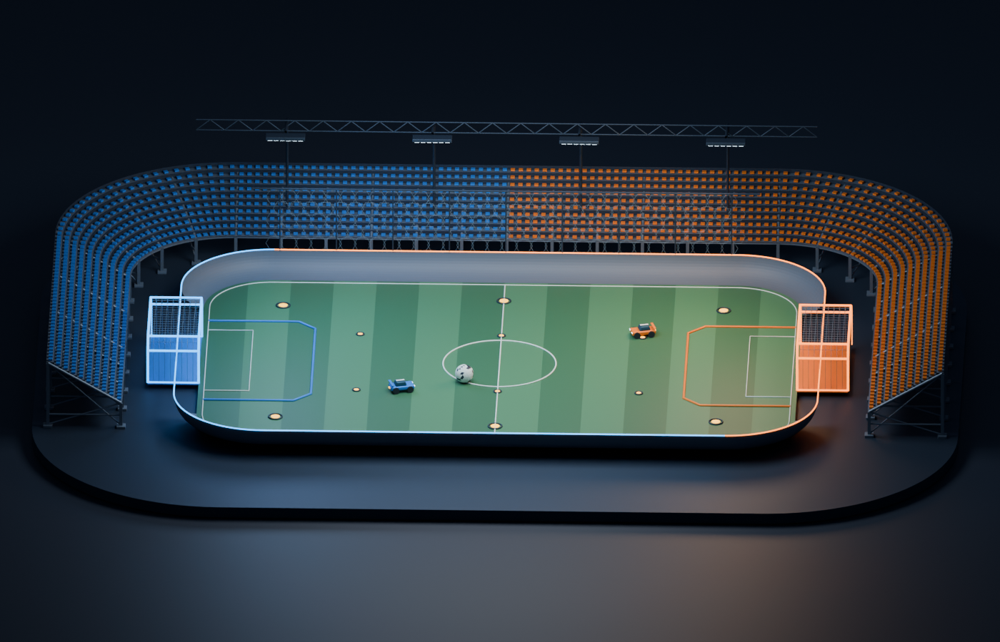
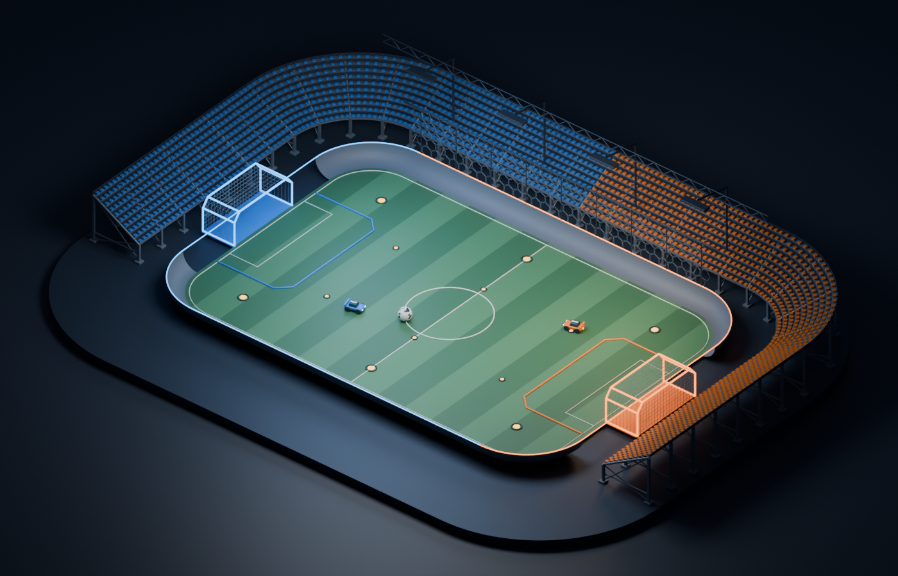
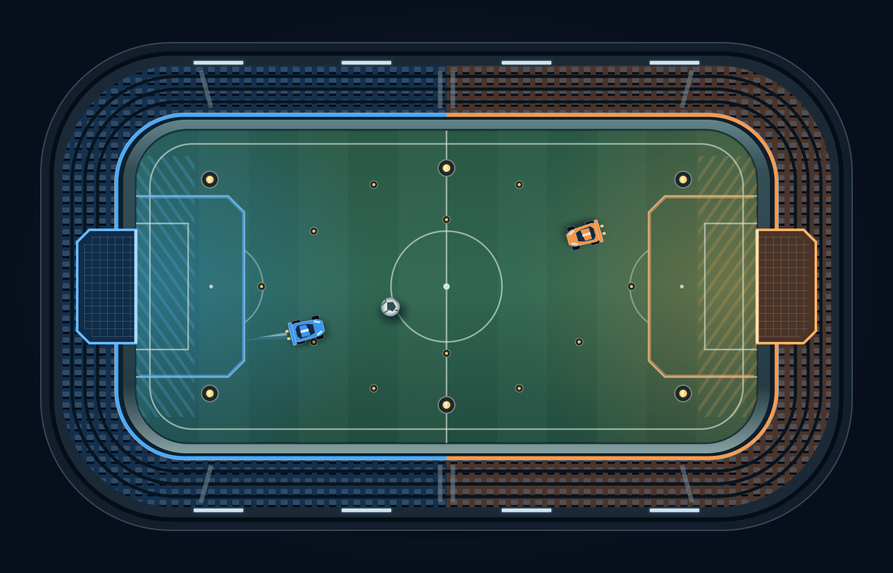

TAYPE-IN / ARENA STUDIES
A stadium you can feel.
Banked corners, recessed goals, mown turf, boost pads, and blue versus orange. Three camera and rendering directions for the arena.

Stadium cutaway
Closest to the current race camera
A broad view of both goals keeps the race easy to follow. The open front exposes the curved walls. A ceiling route would need an upper cage and a visible route overlay.

3D diorama
Most depth and physical presence
An angled view makes the arena feel like a physical space. The same editable Blender model can produce a static background with cars layered on top. Cars and player labels would need to stay readable at the far end.

Top-down SVG
Clearest field layout · SVG source ↗

A lightweight vector arena with crisp markings and clear player positions. This camera hides vertical movement; the existing wall and ceiling route would need unfolded wall lanes or a separate height indicator.